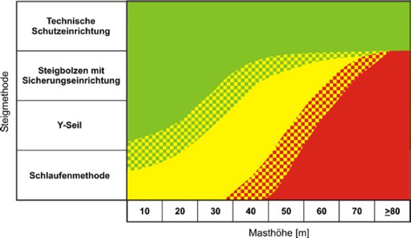

Diese Systematik gibt dem Unternehmer eine Hilfestellung zur Auswahl von Sicherungsmethoden unter Berücksichtigung der Masthöhe, der körperlichen Belastung der Versicherten sowie der zu erwartenden Verletzungsschwere und Eintrittswahrscheinlichkeit eines Absturzes.
Im nachfolgenden wird das Risiko durch die Risikokennzahl RKZ ausgedrückt:
Grad der Verletzungsschwere/Handlungsfähigkeit (G)
Der Grad der Verletzungsschwere/Handlungsfähigkeit (G) ist entsprechend der zu erwartenden Absturzhöhe, der baulichen Gestaltung des Zugangsweges und der ausgewählten PSAgA einzustufen.
| Verletzungsschwere Handlungsfähigkeit (G) | Verletzungsschwere | Handlungsfähigkeit | |
| leicht | 1 | Minimalverletzung | handlungsfähig (kann sich selbst aus der Notsituation befreien) |
| 2 | oberflächliche Verletzung | ||
| 3 | leichte Prellungen | ||
| mittel | 4 | schwere Prellungen (AU < 3 Tage) | eingeschränkt handlungsfähig (kann eigenständig die Rettungskette einleiten) |
| 5 | schwere Prellungen (AU > 3 Tage) | ||
| 6 | leichte Knochenbrüche | ||
| schwer | 7 | schwere Knochenbrüche | handlungsunfähig |
| 8 | schwere Knochenbrüche mit inneren Verletzungen | ||
| 9 | schwere innere Verletzungen | ||
| 10 | Tod | ||
Tabelle 1.1.1: Verletzungsschwere/Handlungsfähigkeit
Eintrittswahrscheinlichkeit des Unfalls (A)
| Eintrittswahrscheinlichkeit des Unfalls (A) | ||
| 1 | Gering | Äußerst unwahrscheinlich |
| 2 | ||
| 3 | ||
| 4 | Mittel | Wahrscheinlich |
| 5 | ||
| 6 | ||
| 7 | Hoch | Äußerst wahrscheinlich |
| 8 | ||
| 9 | ||
Die „Eintrittswahrscheinlichkeit des Unfalls“ ist u. a. von folgenden Einflüssen abhängig:
Tabelle 1.1.2: Eintrittswahrscheinlichkeit des Unfalls
Die ermittelte RKZ beschreibt, ob die gewählte Sicherungsmethode eine ausreichende Maßnahme zum Schutz gegen Absturz darstellt. Folgende RKZ werden für die Eignung von Sicherungsmethoden als ausreichend eingestuft, bzw. lösen zusätzliche Maßnahmen aus:
|
|
|
Bei der Auswahl zusätzlicher Maßnahmen zum Schutz gegen Absturz ist eine möglichst niedrige RKZ anzustreben!
Für die vorgestellten Beispiele gelten folgende Randbedingungen:
Die Wahrscheinlichkeit des Auftretens eines Unfalls ist sowohl von der Masthöhe, der persönlichen Belastungsfähigkeit des Versicherten und von der gewählten Sicherungsmethode abhängig und steigt mit zunehmender Masthöhe an.
Beim Fortbewegen am Steigbolzengang bzw. an der Mastkonstruktion kann ein Abrutschen erfolgen, der Mitarbeiter ist gegen Absturz gesichert, stürzt 4 m in die Tiefe und schlägt gegen die Mastkonstruktion.
| Masthöhe (m) | G | A | RKZ (= G x A) |
| 10 | 6 | 3 | 18 |
| 20 | 6 | 3 | 18 |
| 30 | 6 | 4 | 24 |
| 40 | 6 | 4 | 24 |
| 50 | 6 | 5 | 30 |
| 60 | 6 | 5 | 30 |
| 70 | 6 | 6 | 36 |
| ≥80 | 6 | 7 | 42 |
Tabelle 2.1: Risikokennziffer „Y-Seil“-Methode
Beim Fortbewegen am Steigbolzengang (-leiter) bzw. an der Mastkonstruktion kann ein Abrutschen erfolgen, der Versicherte ist gegen Absturz gesichert, stürzt 4 m in die Tiefe und schlägt an die Mastkonstruktion und an einen Steigbolzen an.
| Masthöhe (m) | G | A | RKZ (= G x A) |
| 10 | 7 | 3 | 21 |
| 20 | 7 | 3 | 21 |
| 30 | 7 | 4 | 28 |
| 40 | 7 | 4 | 28 |
| 50 | 7 | 5 | 35 |
| 60 | 7 | 5 | 35 |
| 70 | 7 | 6 | 42 |
| ≥80 | 7 | 7 | 49 |
Tabelle 2.2: Risikokennziffer Schlaufenmethode
Beim Fortbewegen am Steigbolzengang kann ein Abrutschen erfolgen. Der Versicherte ist gegen Absturz gesichert, stürzt 2 m in die Tiefe und schlägt an die Mastkonstruktion und an den Steigbolzen an.
| Masthöhe (m) | G | A | RKZ (= G x A) |
| 10 | 6 | 3 | 18 |
| 20 | 6 | 3 | 18 |
| 30 | 6 | 3 | 18 |
| 40 | 6 | 4 | 24 |
| 50 | 6 | 4 | 24 |
| 60 | 6 | 5 | 30 |
| 70 | 6 | 5 | 30 |
| >80 | 6 | 6 | 36 |
Tabelle 2.3: Risikokennziffer Steigbolzen mit Sicherheitseinrichtung
Beim Fortbewegen am Steigeisengang kann ein Abrutschen erfolgen. Der Versicherte ist gegen Absturz gesichert, rutscht ca. 0,4 m in die Tiefe. Als Verletzungsschwere sind maximal leichte Prellungen anzunehmen
| Masthöhe (m) | G | A | RKZ (= G x A) |
| 10 | 3 | 3 | 9 |
| 20 | 3 | 3 | 9 |
| 30 | 3 | 3 | 9 |
| 40 | 3 | 4 | 12 |
| 50 | 3 | 4 | 12 |
| 60 | 3 | 4 | 12 |
| 70 | 3 | 5 | 15 |
| ≥80 | 3 | 5 | 15 |
Tabelle 2.4: Risikokennziffer mitlaufende auffanggeräte an fester Führung
Die in dieser Information vorgestellten Sicherungsmethoden zum Schutz gegen Absturz an Freileitungen weisen bei Anwendung der Systematik unterschiedliche RKZ in Abhängigkeit der Masthöhe aus. Eine Zusammenfassung ist in der nachfolgenden Tabelle dargestellt. Hierbei wird deutlich, dass die unterschiedlichen Sicherungsmethoden nicht gleichrangig einsetzbar und z.T. bei höheren Freileitungsmasten als standardisierte Lösungen ungeeignet sind.
Sicherungsmethode

Tabelle 3: Empfehlung zur Auswahl von Sicherungsmethoden in Abhängigkeit von der Masthöhe
|
|
|